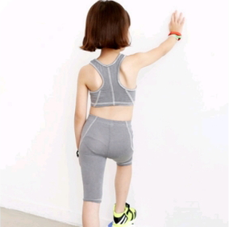
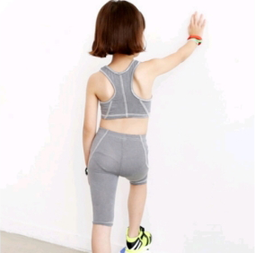

LOLITA
롤리타, 내 삶의 빛이요, 내 생명의 불꽃. 나의 죄, 나의 영혼. 롤-리-타.
세 번 입천장에서 이빨을 톡톡 치며 세 단계의 여행을 하는 혀 끝.
롤. 리. 타.
그녀는 로, 아침에는 한쪽 양말을 신고 서있는 사 피트 십 인치의 평범한 로.
그녀는 바지를 입으면 롤라였다. 학교에서는 돌리. 서류상으로는 돌로레스.
그러나 내 품 안에서는 언제나 롤리타였다.
≪롤리타≫는 블라디미르 나보코프가 1955년에 쓴 소설이다.
주인공 험버트 험버트가 사춘기 소녀 돌로레스 헤이즈에게 성적 욕망을 느끼는 것이 주된 내용이다.
소설의 제목 '롤리타'는 돌로레스 헤이즈(Dolores Haze)의 애칭이다.
논라의 여지가 많은 내용만큼이나 참신한 소설 스타일로 유명하다.
유며와 비극적인 요소가 골고루 섞인 희미극으로,
뛰어난 작품성과 금기시되던 주제로 엄청난 반향을 불러 일으켰다.
세 번 입천장에서 이빨을 톡톡 치며 세 단계의 여행을 하는 혀 끝.
롤. 리. 타.
그녀는 로, 아침에는 한쪽 양말을 신고 서있는 사 피트 십 인치의 평범한 로.
그녀는 바지를 입으면 롤라였다. 학교에서는 돌리. 서류상으로는 돌로레스.
그러나 내 품 안에서는 언제나 롤리타였다.
주인공 험버트 험버트가 사춘기 소녀 돌로레스 헤이즈에게 성적 욕망을 느끼는 것이 주된 내용이다.
소설의 제목 '롤리타'는 돌로레스 헤이즈(Dolores Haze)의 애칭이다.
논라의 여지가 많은 내용만큼이나 참신한 소설 스타일로 유명하다.
유며와 비극적인 요소가 골고루 섞인 희미극으로,
뛰어난 작품성과 금기시되던 주제로 엄청난 반향을 불러 일으켰다.
“너와 내가 함께 불멸을 누리는 길은
주인공 험버트 험버트는 문학자로, 1910년 프랑스 파리에서 태어났다.
그는 부인과 이혼한 뒤, 제 2차 세계 대전 발발 직전에 파리를 떠나 뉴욕으로 이사하는데,
어째서 <롤리타>는
'페미니즘'과 엮이는가.
롤리타 콤플렉스: '2차 성징 이전의 여성에 대한 성적 끌림'
작품 <롤리타>는 주인공 험버트 험버거의 시점으로 진행된다.
<롤리타>는 언뜩 보면 어린 소녀한테 성인 남성 하나가 놀아나는 이야기 같지만,
조금만 깊이 읽어보면 실은 미사여구로 포장된 폭력의 이야기라는 사실이 드러난다.
험버트는 롤리타를 미화하며 찬양하지만, 그녀의 내적 고민이나 괴로움에 대해서는
일언반구도 없으며 그저 자신의 욕망을 위해 롤리타를 이용한다.
<롤리타>는 험버트가 체포된 후 자신의 과거를 회고하는 '고백록'의 형태를 띤다.
이 고백 속에서 그는 자신이 역겨운 범죄자보다는 섬세한 시인에 가까움을 주장하며
아름답고 유려한 문장들로 자신의 행적을 미화하는 데 소설 전체를 할애한다.
그는 독자가 신뢰할 수 없는 기만적인 서술자인 것이다.
험버트는 9세의 베아트리체를 영원히 사랑했던 단테,
14세도 되지 않은 사촌 버니지나와 결혼했던 에드거 앨런 포 등
소아성애적 행태를 보였던 위인을 100명 가깝게 등장시키며
롤리타를 향한 자신의 사랑을 합리화한다.
현대 사회에서
<롤리타 콤플렉스>의 정의
성인 여성에게도 애교나 귀여움을 요구하고,
어린 여성들에게 선정적인 모습을 덧씌우는 것이 만연한 현 상황에서
롤리타 콤플렉스를 성인 남성이 미성숙한 소녀에 대해 정서적 동경이나
성적 집착을 가지는 현상으로만 정의 내리는 것에는 한계가 있다.
따라서 롤리타 콤플렉스의 개념을 단지 남성이 지닌 아동 성 도착적 판다지뿐만 아니라
성인 여성을 수동적이고 미성숙한 소녀상으로 그리고 소비하는 것,
현재 미디어 정경에서 시장적 필요로 개발되는 '섹시 걸'까지도 포함하여 이해해야 한다.
수동적이고
미성숙한 소녀상
 
